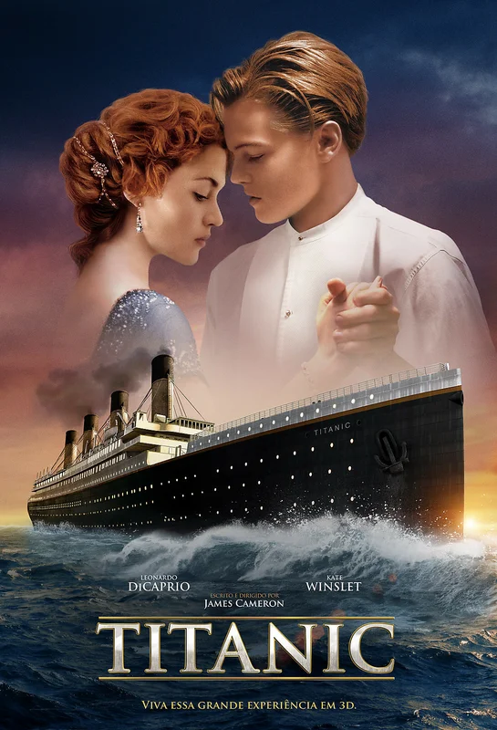

Самые кассовые фильмы в истории кино
- Мстители: Финал (2019)
- Аватар (2009)
- Титаник (1997)
- Звёздные войны: Пробуждение силы (2015)
- Мстители: Война бесконечности (2018)
Мстители: Финал (2019)
Кассовые сборы: $2 797 800 564
Оставшиеся в живых члены команды Мстителей
и их союзники должны разработать новый план, который поможет противостоять разрушительным действиям
могущественного титана Таноса. После наиболее масштабной и трагической битвы в истории они не могут допустить ошибку.
Оценка на кинопоиске 7.620
Аватар (2009)
Кассовые сборы: $2 744 336 793
Джейк Салли - бывший морской пехотинец, прикованный к инвалидному креслу.
Несмотря на немощное тело, Джейк в душе по-прежнему остается воином.
Он получает задание совершить путешествие в несколько световых лет к базе землян на планете Пандора,
где корпорации добывают редкий минерал, имеющий огромное значение для выхода Земли из энергетического кризиса.
Оценка на кинопоиске 7.936

Титаник (1997)
Кассовые сборы: $2 127 488 188
В первом и последнем плавании шикарного «Титаника» встречаются двое.
Пассажир нижней палубы Джек выиграл билет в карты, а богатая наследница Роза отправляется в Америку,
чтобы выйти замуж по расчёту. Чувства молодых людей только успевают расцвести, и даже не классовые различия создадут испытания влюблённым,
а айсберг, вставший на пути считавшегося непотопляемым лайнера.
Оценка на кинопоиске 8.363
Звёздные войны: Пробуждение силы (2015)
Кассовые сборы: $2 068 223 624
Через тридцать лет после гибели Дарта Вейдера и Императора галактика по-прежнему в опасности.
Государственное образование Первый Орден во главе с таинственным верховным лидером Сноуком и его правой рукой Кайло Реном идёт по стопам Империи,
пытаясь захватить всю власть. В это нелёгкое время судьба сводит юную девушку Рей и бывшего штурмовика Первого Ордена Финна с героями войны с Империей
- Ханом Соло, Чубаккой и генералом Леей. Вместе они должны дать бой Первому Ордену, однако настаёт тот момент,
когда становится очевидно, что лишь джедаи могут остановить Сноука и Кайло Рена.
Оценка на кинопоиске 7.091
Мстители: Война бесконечности (2018)
Кассовые сборы: $2 048 359 754
Пока Мстители и их союзники продолжают защищать мир от различных опасностей, с которыми не смог бы справиться один супергерой,
новая угроза возникает из космоса: Танос. Межгалактический тиран преследует цель собрать все шесть Камней Бесконечности
- артефакты невероятной силы, с помощью которых можно менять реальность по своему желанию. Всё, с чем Мстители сталкивались ранее,
вело к этому моменту – судьба Земли никогда ещё не была столь неопределённой.
Оценка на кинопоиске 7.882
В начало